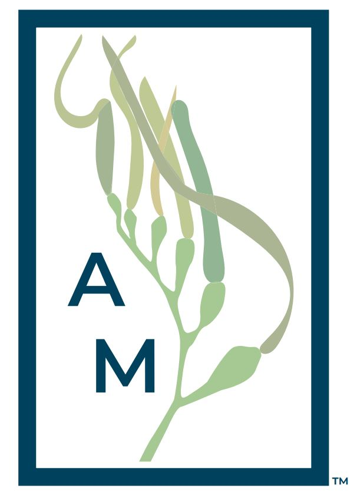

Data Science w/ Python
Graphic Design
Logo Designs
- 1. 2020, Logo designed for a fictitious conservation oriented apparel company named Aqua Minded. The design is simple in nature, much like the goals of the company; to use clothing sales revenue to fund ocean conservation projects around the globe. A deep blue border symbolizes the deep blue ocean that provides for our planet. The sprig of kelp represents the organizations roots in Monterrey, California, home to one of the largest kelp forests in the world.
- 2. 2019, Logo designed for a fictitious data and business analytics company named Wave Analytics Group. The company prides itself in its use of "data for good", using data to help projects that benefit non-profit organizations around the globe. The borderless, open style represents the company's transparency. The wave "W" stylizes the name spelling and also in the word "wave" itself.
- 3. 2020, A logo designed as a project from UMGC CMST 320 which required the use of gradients and box shadow in a logo. This lgoo is for a fictitious indie game developer called Gradient Games. I wanted to make something simple but unique. The name of the company is condensed to "GG" and uses one G to create a shadow for the other G. As a company that primarily develops retro style dungeon crawling games, the color palette was chosen to represent the colors often found in classic dungeon games of the 16-bit era in video games.
- 4. 2020, A logo designed for UMGC CMST 320 which required the creation of a basic logo. This logo is for the Honolulu City Council in Honolulu, Hawaii. On the left, the clothing represents that of the ali'i of the Kingdom of Hawaii, a nod to Hawaii's royal past. The right side contains an oar above a sea of waves. The sea of waves represents the ocean that surrounds the state of Hawaii while the oar represents the seafaring nature of the original inhabitants of the archipelago.
- 5. 2020, A logo for Huang He Project Management Group of Beijing, China. Huang He PMG is a company that specializes in contract based project management for various firms and start-ups. The name Huang He meaning "Yellow River" in English, the design prominently displays the Yellow River flowing from top to bottom. The use of dark grey creates a bold contrast between the yellow river.
Poster Design
- 6. 2020, A poster design for a fictitious summer music festival based out of Kyoto, Japan. The color palette of coral pink and minty green were chosen first to give off a fresh, exciting vibe and secondly to match the reds and greens that are commonly seen on the temples in Kyoto. The white bubbles were added to give that "pop" feeling of bubbles.
 7. 2020, A poster design for the charity Pencils of Promise. Pencils of Promise isdedicated to getting school supplies to marginalized and disadvantaged school children. In this poster design, the use of a dual tone layering effect creates a spotlight on the young student. This symbolizes that under the spotlight of Penicls of Promise, they will achieve their goal of bringing what is needed to those who may not have another means to ask for educational supplies.
7. 2020, A poster design for the charity Pencils of Promise. Pencils of Promise isdedicated to getting school supplies to marginalized and disadvantaged school children. In this poster design, the use of a dual tone layering effect creates a spotlight on the young student. This symbolizes that under the spotlight of Penicls of Promise, they will achieve their goal of bringing what is needed to those who may not have another means to ask for educational supplies.
- 8. 2019, This was a personal project of mine to create a poster for my Japan tourism website. The crimson color is used to represent the many temples that call Kyoto home. The city of kyoto is seen through the cutout on the foreground, which is "Kyoto" written in Japanese kanji.